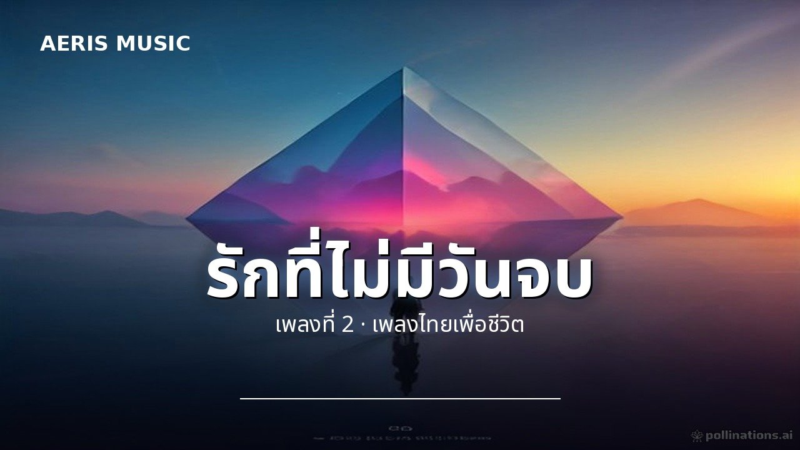
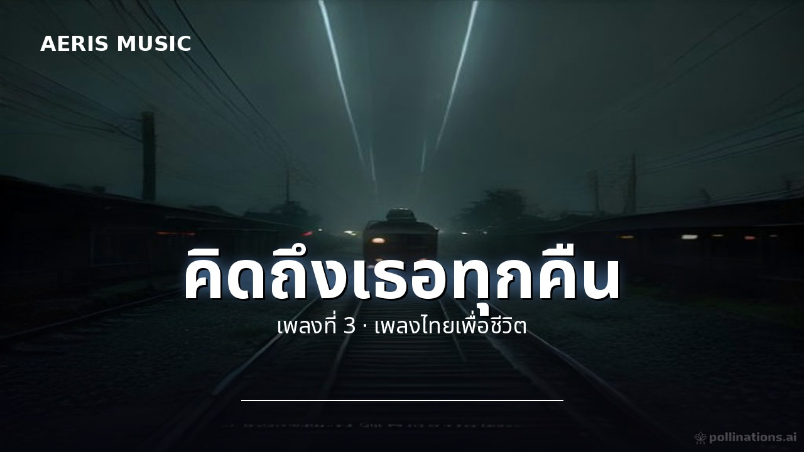
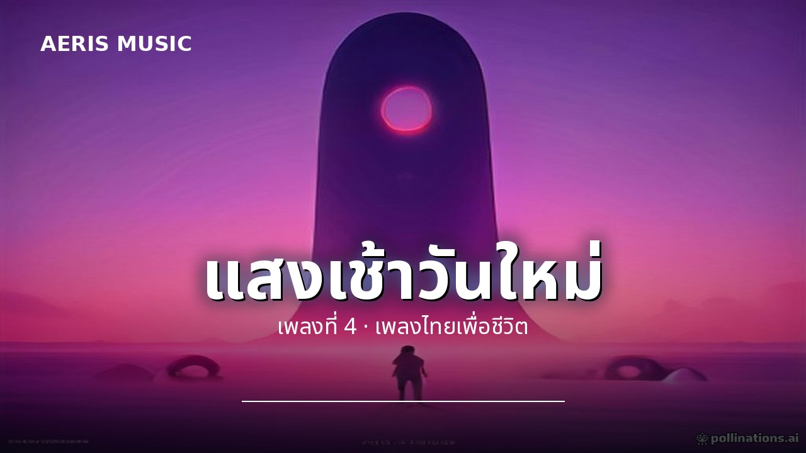

| # | ชื่อเพลง | เวลา | ดาวน์โหลด | |
|---|---|---|---|---|
| 01 | คนดีที่จากไปเพลงที่ 1 · เพลงไทยเพื่อชีวิต | 3:56 | เพลง · คาราโอเกะ | |
 | 02 | รักที่ไม่มีวันจบเพลงที่ 2 · เพลงไทยเพื่อชีวิต | 3:59 | เพลง · คาราโอเกะ |
 | 03 | คิดถึงเธอทุกคืนเพลงที่ 3 · เพลงไทยเพื่อชีวิต | 3:58 | เพลง · คาราโอเกะ |
 | 04 | แสงเช้าวันใหม่เพลงที่ 4 · เพลงไทยเพื่อชีวิต | 3:58 | เพลง · คาราโอเกะ |
| 05 | ฝนตกในใจเพลงที่ 5 · เพลงไทยเพื่อชีวิต | 3:59 | เพลง · คาราโอเกะ | |
| 06 | เดินคนเดียวเพลงที่ 6 · เพลงไทยเพื่อชีวิต | 3:58 | เพลง · คาราโอเกะ | |
| 07 | หัวใจสีเทาเพลงที่ 7 · เพลงไทยเพื่อชีวิต | 3:57 | เพลง · คาราโอเกะ | |
| 08 | กลับบ้านเราเพลงที่ 8 · เพลงไทยเพื่อชีวิต | 3:59 | เพลง · คาราโอเกะ | |
| 09 | เพลงของคนเหนื่อยเพลงที่ 9 · เพลงไทยเพื่อชีวิต | 3:57 | เพลง · คาราโอเกะ |